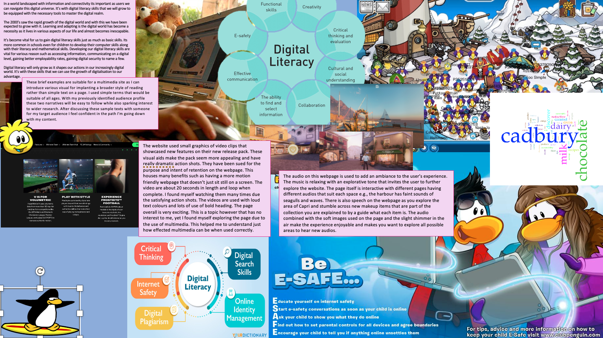
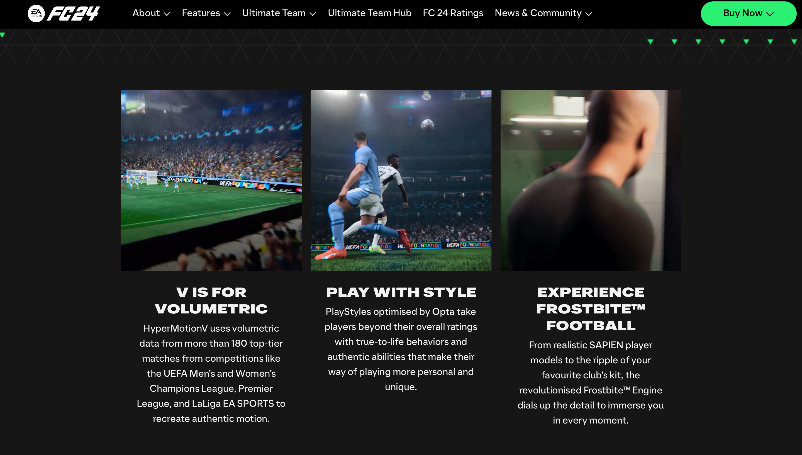

Website: EA Sports new dynamic to FC brand
The website used small graphics of video clips that showcased new features on their new release pack. These visual aids make the pack seem more appealing and have really dramatic action shots. They have been sued for the purpose and intent of retention on the webpage. This houses many benefits such as having a more motion friendly webpage that doesn’t just sit still on a screen. The video are about 20 seconds in length and loop when complete. I found myself watching them many times due the satisfying action shots. The videos are used with loud text colours and lots of use of bold heading. The page overall is very exciting. This is a topic however that has no interest to me, yet I found myself exploring the page due to the use of multimedia. This helped me to understand just how effected multimedia can be when used correctly.
Updated Moodbaord
Pixabay, Coverr-Free-Footage
Pixabay, FindingFootage
Editing and exporting my own video files.
High (1080p)
Medium (720p)
Low (480p)